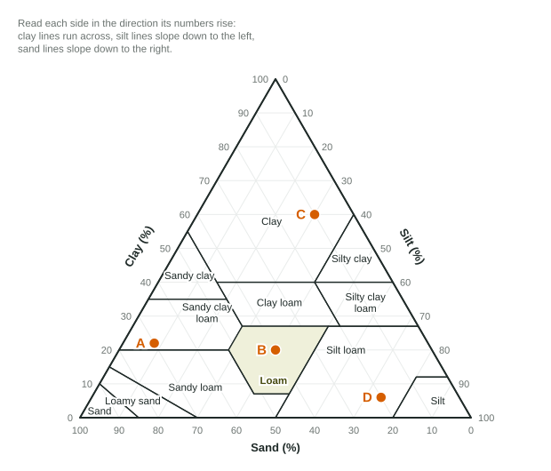

Soil Composition and Properties
Soil texture, the share of sand, silt and clay, sets how soil behaves.
Part 1 · Hook
Why this matters
Part 2 · Before you start
What this builds on
Part 3 · Prerequisite check
Quick check before you start
1. Which soil horizon is topsoil?
- The A horizon
- The B horizon
- The C horizon
- Bedrock
Show the answer
The A horizon is topsoil: humus mixed with minerals.
- Correct: The A horizon:
- The B horizon:
- The C horizon:
- Bedrock:
2. What is humus?
- Decomposed organic matter in soil
- Weathered bedrock
- Water held in the soil
- Salt left by evaporation
Show the answer
Humus forms when decomposers break down dead organisms.
- Correct: Decomposed organic matter in soil:
- Weathered bedrock:
- Water held in the soil:
- Salt left by evaporation:
3. What is leaching?
- Water carrying dissolved substances down through the soil
- Wind lifting soil off a field
- Plants taking up nutrients
- Rock breaking into smaller pieces
Show the answer
Leaching moves dissolved nutrients and minerals downward with water.
- Correct: Water carrying dissolved substances down through the soil:
- Wind lifting soil off a field:
- Plants taking up nutrients:
- Rock breaking into smaller pieces:
Part 4 · See it
See it first
![The USDA soil texture triangle. Each side is a percent scale from 0 to 100: clay on the left side, silt on the right side, sand along the bottom. Lines of equal clay run across the triangle; lines of equal silt slope down to the left; lines of equal sand slope down to the right. The triangle is divided into twelve texture classes: clay at the top; silty clay, sandy clay, silty clay loam, clay loam and sandy clay loam below it; loam in the middle, shaded; silt loam and silt toward the bottom right; sandy loam, loamy sand and sand toward the bottom left. Loam is a balanced mix of sand, silt and clay, roughly 40% sand, 40% silt and 20% clay.](../figures/soil-properties-texture-triangle.svg)
Part 5 · Step by step
How it works, step by step
- Sand grains are large and clay particles are tinysand leaves large pores, clay leaves very many tiny pores
- Water moves easily through large, connected poressandy soil has high permeability and drains fast
- Tiny pores hold water tightly and pass it slowlyclay soil has high water-holding capacity but drains slowly and can lack air
- Clay and humus hold nutrients that water would otherwise leach awaya loam with humus is fertile, holds water and still drains
Part 6 · Key ideas
Key ideas
- Soil texture is the share of sand (largest), silt and clay (smallest) particles. The soil texture triangle turns the three percentages into a texture class.
- Loam is a balanced mix (roughly 40% sand, 40% silt, 20% clay) that drains well yet holds water and nutrients.
- Porosity is the share of soil volume that is pore space. Permeability is how easily water flows through: highest in sand, with large connected pores; lowest in clay, with tiny pores.
- Water-holding capacity is how much water a soil can hold against gravity: highest in clay and soils rich in humus, lowest in sand.
- Soil fertility is the soil's ability to supply nutrients. Clay and humus hold nutrients; pH controls whether roots can take them up (most crops prefer about 6 to 7).
Part 7 · Misconception
A common mistake
The wrong idea: Sand drains fast because it has more pore space than clay.
What actually happens: Clay usually has as much or more total pore space; its pores are just tiny. Sand drains fast because its pores are large and connected: that is permeability, not porosity.
Part 8 · Check yourself
Check yourself
Exam-style questions. Anything you miss goes into your review queue.
1. Why does water drain through a sandy soil faster than through a clay soil?
- Sand has large, connected pores that water flows through
- Sand holds more humus, which pulls water down through the soil
- Clay grains are larger, so they block the water from passing
- Clay particles pack so tightly that clay has almost no pores
Show the answer
Permeability depends on pore size. Large sand grains leave large, connected pores; tiny clay particles leave tiny pores that water moves through slowly.
- Correct: Sand has large, connected pores that water flows through: Right: big, connected pores make sand highly permeable.
- Sand holds more humus, which pulls water down through the soil: Humus does not pull water down; sand usually holds little humus.
- Clay grains are larger, so they block the water from passing: Clay particles are the smallest, not the largest.
- Clay particles pack so tightly that clay has almost no pores: Clay has plenty of pore space, but its pores are tiny, so water moves slowly through them.
2. A gardener wants a soil that holds enough water for plants but still drains so roots get air. Which soil texture fits best?
- Loam
- Sand
- Clay
- Silty clay
Show the answer
Loam mixes sand, silt and clay, so it combines enough drainage and air space with enough water-holding capacity and nutrients.
- Correct: Loam: Right: loam balances drainage and water-holding capacity.
- Sand: Sand drains so fast that it holds little water for plants.
- Clay: Clay holds water but drains slowly, so roots can run short of air.
- Silty clay: Silty clay is mostly fine particles, so it drains slowly too.
Model or diagram
Four soil samples on the soil texture triangle

3. On the triangle, which sample is a loam?
- Sample B
- Sample A
- Sample C
- Sample D
Show the answer
Sample B (40% sand, 40% silt, 20% clay) sits inside the shaded loam region in the middle of the triangle.
- Correct: Sample B: Right: B is in the loam region.
- Sample A: Sample A is in the sandy clay loam region.
- Sample C: Sample C is in the clay region at the top.
- Sample D: Sample D is in the silt loam region.
4. Sample D is 6% clay and 20% sand. What percent of sample D is silt?
Type a number, then its unit (%). Scale words (2.5 million) and powers of ten (2.5 × 10^6) are read.
Show the answer
silt, which is why D sits in the silt loam region.
- Answer: 74 %
5. Which sample would hold the most water but let water pass through it most slowly?
- Sample C
- Sample A
- Sample B
- Sample D
Show the answer
Sample C is 60% clay. Clay's tiny pores hold water tightly and pass it slowly, so C has high water-holding capacity and low permeability.
- Correct: Sample C: Right: the clay sample holds water and drains slowly.
- Sample A: Sample A is 70% sand, so it drains quickly.
- Sample B: Sample B is a loam, in between.
- Sample D: Sample D is mostly silt with little clay, so it holds less water than C.
Data
A class tests how water moves through three soils
| Soil | Time for the water to pass through the column (minutes) | Water that drained out (mL) | Water held by the soil (mL) |
|---|---|---|---|
| Sand | 2 | 170 | 30 |
| Loam | 10 | 120 | 80 |
| Clay | 50 | 90 | 110 |
6. The water in the loam column traveled 10 cm in 10 minutes. Find the percolation rate in centimeters per hour. Write the setup with units, then the answer. (1 hour = 60 minutes)
Type the setup as on the exam, with brackets and units, then the answer.
Show the answer
- Setup: ; answer 60 cm/h
Part 9 · Summary
Summary
Part 10 · Up next
What comes next
Part 11 · Connections